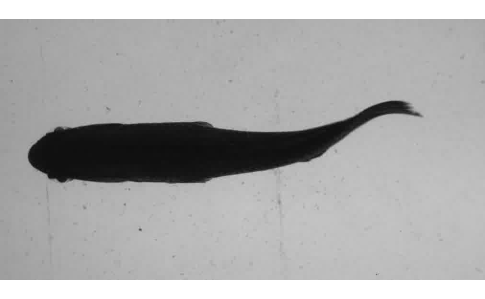
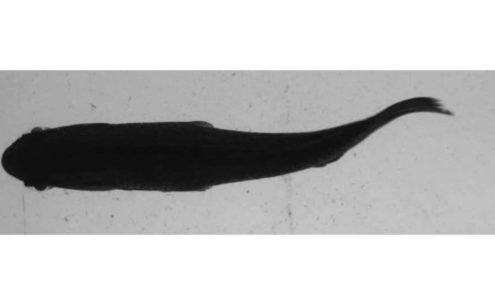
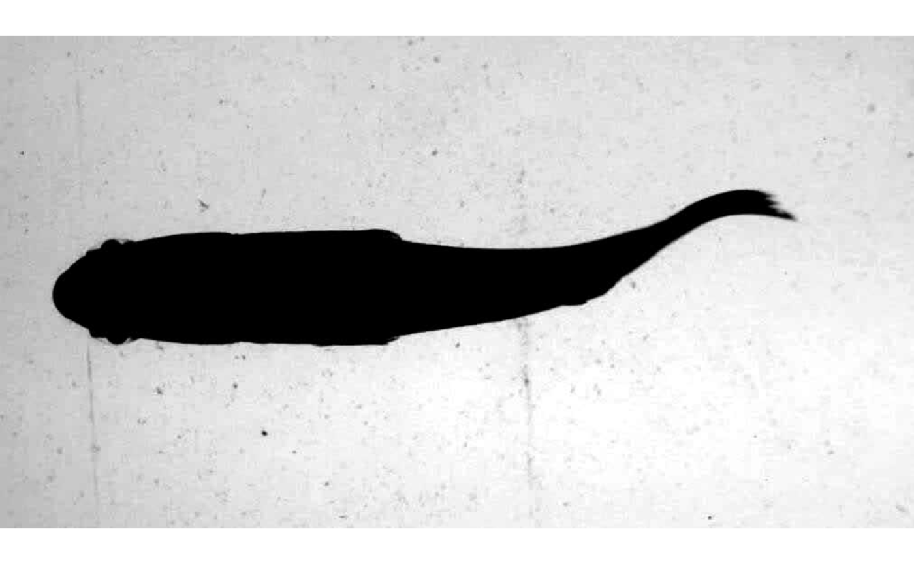
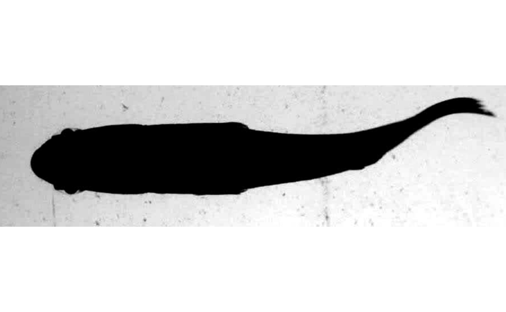
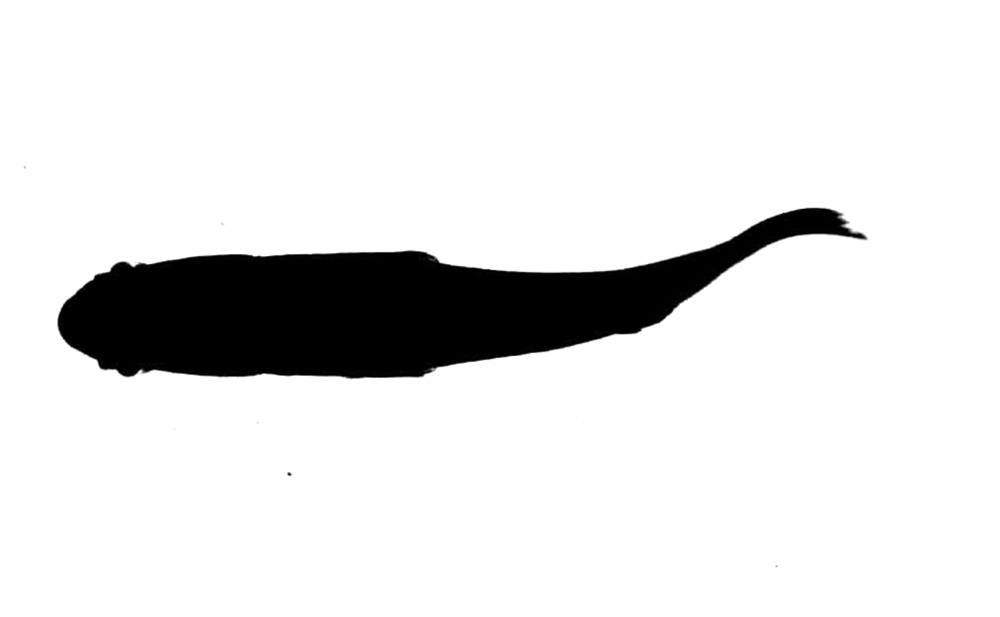

image_processing.RmdThe image analysis functions kin.search(), kin.simple(), and kin.free() (i.e., the kin functions) require image sequences stored in a directory. The argument img.dir specifies which directory contains the images to be analyzed. Supported image formats include jpeg, png, and tiff.
Users can start analysis with images extracted from videos using some other software program (e.g., imageJ). However, they must be given unique file names that end in a sequence number. For example “image_01.jpeg”, “image_02.jpeg”, etc.
If the starting point of analysis is a video file, trackter’s video.to.images() or video.to.images2() can be used to extract images to a user-defined directory. Supported video formats include .avi and .mp4 files. For example, the following with extract images from an 11-frame video of a swimming pumpkinseed sunfish included with the package.
library(trackter)
sunfish.vid <- system.file("extdata/vid", "sunfish_BCF_red.avi", package = "trackter")
dir.create("./sunfish_images")
vid.to.images(vid.path = sunfish.vid, out.dir = "./sunfish_images")The 11 files are now in the “./sunfish_images” directory and the first one is displayed
list.files("./sunfish_images")## [1] "sunfish_BCF_red_00001.jpg" "sunfish_BCF_red_00002.jpg"
## [3] "sunfish_BCF_red_00003.jpg" "sunfish_BCF_red_00004.jpg"
## [5] "sunfish_BCF_red_00005.jpg" "sunfish_BCF_red_00006.jpg"
## [7] "sunfish_BCF_red_00007.jpg" "sunfish_BCF_red_00008.jpg"
## [9] "sunfish_BCF_red_00009.jpg" "sunfish_BCF_red_00010.jpg"
## [11] "sunfish_BCF_red_00011.jpg"
EBImage::display(EBImage::readImage(list.files("./sunfish_images",full.names = TRUE)[1]),method = "raster")
video.to.images2() supports added FFmpeg functionality, allowing users to specify filters that may, for example crop, rotate, or adjust the size of the images. Filters can be passed to the filt argument as a character string. For example, one can extract images from the same video and crop around their center at 900 pixels wide and 400 pixels deep with the following.
#Crop the central input area with size 900x300:
filt.crop <- ' -vf crop=900:300 '
#creat the directory again
#will overwrite images in the directory
vid.to.images2(vid.path = sunfish.vid, out.dir = "./sunfish_images", filt = filt.crop,silent = ) # extractNow, display one of the cropped images.
EBImage::display(EBImage::readImage(list.files("./sunfish_images",full.names = TRUE)[1]),method = "raster")
Notice that the character string passed to filt begins and ends with a white space and the first part of the string contains ” -vf” which implements a video filter in FFmpeg. To learn more about filters, users can check out the FFmpeg wiki site.
Here’s another example with a filter that doubles the contrast.
#boost the contrast
filt.br <- ' -vf "eq=contrast=2" '
#extract and filter (overwriting the previous extraction)
vid.to.images2(vid.path = sunfish.vid, out.dir = "./sunfish_images", filt = filt.br)
#display
EBImage::display(EBImage::readImage(list.files("./sunfish_images",full.names = TRUE)[1]),method = "raster")
#clean up
#unlink("./sunfish_images",recursive = TRUE)For those who simply want to crop images or change their contrast without using FFmpeg filters, trackter offers crop.img() and contrast.img(), respectively. Continuing with the same image sequence, crop.img() is used here to crop the images with a rectangle described the arguments ul (the lower left xy position) and br (the bottom right xy position) and save them the a directory specified by out.dir.
#create the out.dir
dir.create("./sunfish_images2")
#crop at pixels 5,150 and 900,400
crop.img(img="./sunfish_images",out.dir ="./sunfish_images2",ul=c(5,150),br=c(900,400))
#display the first cropped image in the sequence
EBImage::display(EBImage::readImage("./sunfish_images2/sunfish_BCF_red_00001.jpg"),method="raster")
Here, the same image sequence has its contrast enhanced with contrast.img(). Contrast is doubled in this case with the argument c=2.
#contrast and overwrite imgages in out.dir
contrast.img(img="./sunfish_images",out.dir ="./sunfish_images2",c=2)
#display the first cropped image in the sequence
EBImage::display(EBImage::readImage("./sunfish_images2/sunfish_BCF_red_00001.jpg"),method="raster")